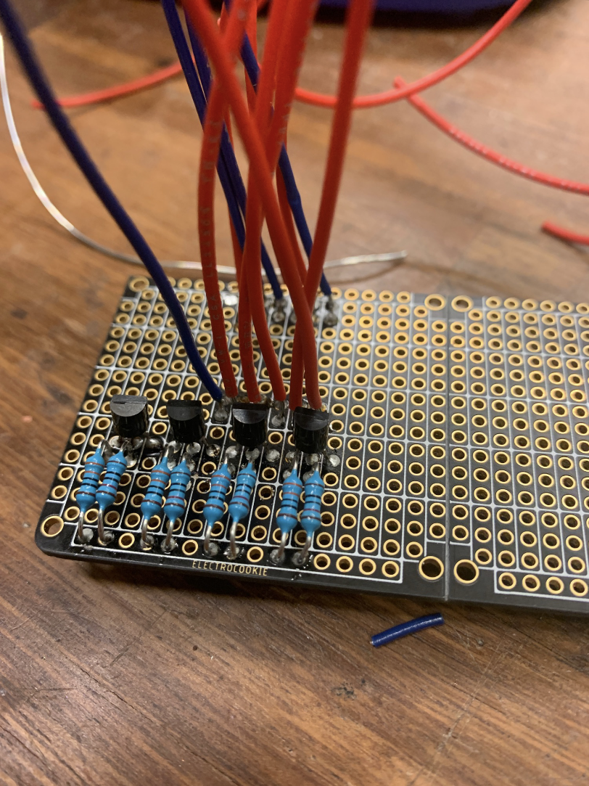

TRANSITION FROM SOLDERLESS TO PROTO-BOARD


Designer: Martin Allsbrook
Role: Ideation, Prototyping, Programming, Enclosure, Circuitry
Tools used: Arduino IDE, Sparkfun documentation, Sparkfun program examples
Timeline: March 2022 – April 2022
For this project I developed a hand held skateboarding game. The game is enclosed in a small phone sized “skateboard” I'm calling a handboard. To play the game the player tries to do skateboard style tricks with the handboard, such as a kickflip or shove it. The more tricks the player lands in a row the more points they get but if they fail a trick the game is over and their score resets. Throughout the game the score is displayed on a seven segment display on the handboard.
The idea for this project came to me surprisingly quickly. Over the past few years I’ve developed an interesting habit of trying to do skateboard style flips with almost any object that ends up in my hands. Most often the object I’m flipping ends up being my phone. I find that the shape and weight of my phone work very well for many tricks, however constantly dropping my phone when I fail to land a trick isn’t the best for it. I’ve been trying to think of other objects that have a similar shape and weight to my phone but nothing has really come to mind other than a shaped metal block.
When thinking of possible ideas for my final project this idea was the first thing to come to mind. Not only did I have an excuse to try to develop an object with the same feel as my phone, but I had the idea to turn the habit into some sort of game I and others could play. To create the feel of my phone I would have to make the object as flat as possible in one dimension, long in one, and somewhere in between for the final dimension. This profile also has some very important implications in terms of making the object feel like a skateboard, which I will explain later. In order to turn it into a game I wanted to implement a scoring system that rewards the player for landing multiple ticks without falling, like a “line” in classic skateboarding.
The handboard went through quite a few stages of development. Originally I planned on using a 3-axis accelerometer to detect the movement of the board and I had designed a few prototypes using one as the sole sensor. The earliest prototype for the hand board was made by simply velcroing the accelerometer with the longest cables I could find connecting it to the arduino and my computer. The cables frequently interfered with measurements I was trying to take while the handbard was in thair air and I quickly realized I needed a “wireless” prototype.
Since I didn’t have the means to wirelessly connect the handboard to the arduino, I opted to condense all the hardware onto a single prototype. To do this I folded an extremely large amount of aluminum foil into a shape similar to my phone. Using tin foil was nice as it gave the handboard weight and allowed me to produce almost any shape. I proceed by gluing and zipting all the hardware I needed to the tinfoil brick and testing. What I quickly realized is that a single 3 axis accelerometer is not nearly enough information to discern what the board is doing.
The accelerometer was really good at telling me which way was down using gravity, but it could not give me any information about rotation or what was happening when the board was thrown. Knowing information about rotation is necessary for detecting shove its, however we can’t detect the rotation of a shove because down doesn’t change at any point during one. The other issue is that as soon as you let go of the phone to do a trick, the accelerometer sends back zero readings. This is because the board is in free fall and from the perspective of the accelerometer there are no forces on the phone, therefore it detects nothing. After finding these issues I purchased a 9 degrees of freedom initial measurement unit with a 3 axis accelerometer, gyro, and compass, giving me plenty of information to use.
One of the most important factors I considered when designing the handboard was its shape. The specific shape of a skateboard dictates many of the tricks you can and can’t do, and in order to make the handboard flip like a real skateboard I had to make sure I got its shape and weight distribution perfect. The biggest consideration I made was making sure that the handboard had a considerably different length in all three dimensions. In the case of my handboard it turned out to be a length of 6 ¼” from tip to tail, a width of 3 ¼”, and a thickness of 1”. Having these three dimensions be considerably different makes the handboard flip similarly to a skateboard.
The most noticeable effect of these dimensions is visible when trying an “imposible,” a skateboard trick where you spin a skateboard 360 degrees around its second shortest axis, in this case a line from one side to the other. This skate trick was given this name because anytime you attempt the trick the skateboard will end up making a 180 degree turn about its longest axis in addition to the 360 degree rotation, making the trick impossible. No amount of skill or finesse can prevent the unwanted rotation, in fact the unwanted rotation is unavoidable in any object with the profile described above.
Now that I had the shape of the handboard figured out and the beginning steps of the physical handboard being built around my arduino I remembered that I was going to have to add weights. Without adding weights to the handboard its weight distribution was entirely thrown off. The massive battery in the corner of the board accounted for most of the weight and when flipping the board it would just rotate around the battery as it was currently the center of mass. To counteract this I hot glued small steel balls in each of the remaining corners until I was able to get the handboard to balance on its centerpoint.
One of the most important considerations I made was adding grip tape to one side of the board. Both my phone and my skateboard have a side that's gripped either with grip tape or my rubber phone case. After testing the handboard I quickly realized it needed grip tape. Not only does having grip tape make the object easier to hold on to, it also defines an up and a down, and a side for the user to hold. Without the griptape there would be no motivation for the user to land the board back on the side they started from because both sides would be identical. The grip tape used on the handboard is extremely low grit, non abrasive sandpaper to preserve the users hands.
Another important consideration I made in the design process was allowing for the removal of the battery. Pretty early on into the construction of the enclosure I realized that I wasn’t going to be able to remove the battery. To allow me to still exchange dead batteries I created a small cut out the size of a battery on the side of the board. I then stuck velcro to the inside of the cut out and to the battery to be swapped while still maintaining the rectangular shape.
I would like to add a few more tricks to the device other than the four currently available to add some depth to the game. I plan to do this by implementing a machine learning algorithm that will learn what a proper version of each trick looks like based on the data from the IMU. There are enough details in the data that I think an advanced algorithm could recognize complex patterns and indicators of a successful trick, allowing it to see past the noise and decipher between land and fail better than my current solution.
My original plan for the hand board was to have it be the controller for a more vast computer based game. The game would be somewhat like “Skate” for the Xbox and would allow players to explore and skateboard around an open world. I could use tilt sensing to steer the player left and right, similar to a traditional skateboard. Tricks would be done just as they are now, only the player's character would perform the same trick virtually. This idea gets me extremely excited and I hope to bring it to fruition eventually, possibly as my capstone project next year.